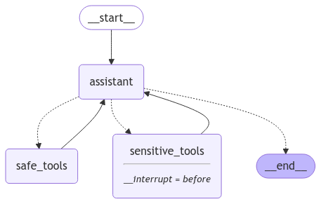

Building FlawedCode: A Minimal Claude Code Clone#
Duration: 30 minutes
Learning Objectives:
Build a working coding assistant step-by-step
Implement file operation and code execution tools
Understand the difference between v0 (no memory) and v1 (with memory)
Experience agent limitations firsthand
What is FlawedCode?#
FlawedCode is a minimal Claude Code clone in ~200 lines. It’s a REPL-based coding assistant that can read files, write code, navigate directories, and execute Python—just like the production tools you use daily.
Full code: 08_flawed_code on GitHub
Why “Flawed”?#
The name is intentional:
Uses inexpensive models (~$0.15/1M tokens) that make mistakes
Missing many features of production tools
The flaws are the point - you’ll learn both capabilities AND limitations
This is how you learn to build better agents: by building imperfect ones first.

FlawedCode implements the autonomous agent pattern: receive input, decide on tools, observe results, loop until complete. Source: Anthropic
📚 Literature: Yao, S., Zhao, J., Yu, D., et al. (2023). “ReAct: Synergizing Reasoning and Acting in Language Models.” ICLR 2023.
This paper formalized the agent pattern FlawedCode implements. ReAct showed that interleaving reasoning traces with actions produces more reliable agents than pure reasoning (chain-of-thought) or pure action (without explicit reasoning). The key insight: agents should “think out loud” before and after tool calls.
The Tools#
FlawedCode has 5 core tools—the minimum needed for a useful coding assistant:
Tool |
Purpose |
Example |
|---|---|---|
|
Read file contents |
|
|
Create/modify files |
|
|
Navigate directories |
|
|
Find patterns in code |
|
|
Execute Python code |
|

FlawedCode augments the base LLM with file operations and code execution—the minimum tools for a useful coding assistant. Source: Anthropic
📚 Literature: Chen, M., et al. (2021). “Evaluating Large Language Models Trained on Code.”
Codex demonstrated that LLMs trained on code repositories can generate functional programs from natural language descriptions. This capability—showing that a single model could both understand and produce code—is what makes tools like FlawedCode possible. The paper also introduced HumanEval, still used today to benchmark code generation.
Tool Implementation#
Tools use LangChain’s @tool decorator:
from langchain_core.tools import tool
from typing import Annotated
from pathlib import Path
WORK_DIR: Path = Path(".") # Constrained working directory
@tool
def read_file(path: Annotated[str, "Relative path to file"]) -> str:
"""Read the contents of a file."""
try:
full_path = WORK_DIR / path
if not full_path.exists():
return f"Error: File not found: {path}"
return full_path.read_text()
except Exception as e:
return f"Error: {e}"
@tool
def write_file(
path: Annotated[str, "Relative path to file"],
content: Annotated[str, "Content to write"]
) -> str:
"""Write content to a file. Creates parent directories if needed."""
try:
full_path = WORK_DIR / path
full_path.parent.mkdir(parents=True, exist_ok=True)
full_path.write_text(content)
return f"Wrote {len(content)} characters to {path}"
except Exception as e:
return f"Error: {e}"
@tool
def run_python(code: Annotated[str, "Python code to execute"]) -> str:
"""Execute Python code and return the output. Use print() to show results."""
try:
with tempfile.NamedTemporaryFile(mode='w', suffix='.py', delete=False) as f:
f.write(code)
temp_path = f.name
result = subprocess.run(
['python', temp_path],
capture_output=True,
text=True,
timeout=10, # Safety limit
cwd=WORK_DIR,
)
output = result.stdout
if result.stderr:
output += f"\n[stderr]: {result.stderr}"
return output.strip() if output.strip() else "[No output]"
except subprocess.TimeoutExpired:
return "[Error: Execution timed out after 10 seconds]"
finally:
Path(temp_path).unlink(missing_ok=True)
FlawedCode v0: No Memory (Baseline)#
First, let’s build the simplest possible version—one that forgets everything between turns.

v0 treats each turn as independent: no memory of previous interactions means the agent forgets everything between turns. Source: Anthropic
The Code#
from langgraph.prebuilt import create_react_agent
def run_single_turn(agent, user_input):
"""Process one turn with no memory."""
messages = [("user", user_input)] # Fresh messages each time!
response = agent.invoke({"messages": messages})
return response["messages"][-1].content
Demo: Watch It Fail#
flawed_code_v0> List files in the project
[list_files] {}
→ [file] README.md
[file] analyze.py
[file] data.csv
Found 3 files: README.md, analyze.py, and data.csv.
flawed_code_v0> Read analyze.py
[read_file] {"path": "analyze.py"}
→ """Stock price analyzer..."""
The file contains stock analysis functions including
calculate_returns and calculate_volatility.
flawed_code_v0> What files did you just read?
I don't have any context about previous actions.
Could you tell me which files you'd like me to read?
The agent forgot everything! Each turn starts fresh.
Why It Fails#
Turn 1: messages = [user: "list files"] → response
Turn 2: messages = [user: "read file"] → response (no memory of turn 1)
Turn 3: messages = [user: "what files?"] → response (no memory of turns 1-2)
The messages list is recreated each turn. No history is preserved.
FlawedCode v1: With Memory#
Now let’s add the critical feature: conversation memory.

With memory, the agent can iterate through multi-step tasks—reading, modifying, and verifying code while maintaining context. Source: Anthropic
The Key Difference#
# v0: Messages reset each turn
def run_single_turn(agent, user_input):
messages = [("user", user_input)] # Fresh each time!
...
# v1: Messages persist across turns
messages = [] # OUTSIDE the loop!
while True:
user_input = input("flawed_code> ")
messages.append(("user", user_input))
for event in agent.stream({"messages": messages}):
# Process events...
pass
# Messages accumulate - agent remembers everything
The Full REPL#
from langchain_openai import ChatOpenAI
from langgraph.prebuilt import create_react_agent
from tools import read_file, write_file, list_files, search_files, run_python
MODEL = "openai/gpt-4o-mini" # Cheap but capable
llm = ChatOpenAI(
model=MODEL,
base_url="https://openrouter.ai/api/v1",
api_key=config("OPENROUTER_API_KEY"),
)
SYSTEM_PROMPT = """You are FlawedCode, a simple coding assistant.
You have access to:
- read_file: Read file contents
- write_file: Write/create files
- list_files: List directory contents
- search_files: Search patterns in files
- run_python: Execute Python code
When helping with code:
1. First understand the codebase (list_files, read_file)
2. Make focused changes (write_file)
3. Test if needed (run_python)
Be concise but helpful. You may make mistakes - you're running on a cheap model!
"""
tools = [read_file, write_file, list_files, search_files, run_python]
agent = create_react_agent(llm, tools, prompt=SystemMessage(content=SYSTEM_PROMPT))
def run_repl():
print(f"flawed_code v0.1 - Minimal Claude Code Clone")
print(f"Using model: {MODEL}")
print("-" * 50)
messages = [] # Persistent memory!
while True:
user_input = input("\nflawed_code> ").strip()
if user_input.lower() == "quit":
break
if user_input.lower() == "clear":
messages = []
print("[Conversation cleared]")
continue
messages.append(("user", user_input))
for event in agent.stream({"messages": messages}):
# Print tool calls and results
for key, value in event.items():
if key == "agent":
msg = value["messages"][-1]
if hasattr(msg, "tool_calls") and msg.tool_calls:
for tc in msg.tool_calls:
print(f" [{tc['name']}] {str(tc['args'])[:60]}...")
elif hasattr(msg, "content") and msg.content:
print(msg.content)
messages.append(("assistant", "[response]"))
Demo: Now It Works!#
flawed_code> List files in the project
[list_files] {}
→ [file] README.md
[file] analyze.py
[file] data.csv
Found 3 files: README.md, analyze.py, and data.csv.
flawed_code> Read analyze.py
[read_file] {"path": "analyze.py"}
→ """Stock price analyzer..."""
The file contains stock analysis functions...
flawed_code> What files did you just read?
I just read analyze.py, which contains stock analysis functions
including calculate_returns and calculate_volatility.
The agent remembers! Same questions, different results.
Hands-On Exercise: Run FlawedCode#
cd ai_inclass_examples/agents/08_flawed_code
python -m venv .venv
source .venv/bin/activate # Windows: .venv\Scripts\activate
pip install -r requirements.txt
python flawed_code.py
Try These Tasks#
Explore:
"what files are here?"Read:
"read analyze.py and describe it"Fix a bug:
"fix the bug in calculate_volatility"Test:
"run it"
Example Session#
flawed_code v0.1 - Minimal Claude Code Clone
Using model: openai/gpt-4o-mini
Working directory: demo_project
Commands: 'quit' to exit, 'clear' to reset conversation
--------------------------------------------------
flawed_code> what files are here?
[list_files] {}...
→ [file] README.md
[file] analyze.py
[file] data.csv
There are 3 files: README.md, analyze.py, and data.csv.
flawed_code> read analyze.py and describe it
[read_file] {'path': 'analyze.py'}...
→ """Stock price analyzer."""...
The analyze.py file contains stock analysis functions:
- calculate_returns: Computes daily returns from prices
- calculate_volatility: Computes standard deviation (has a bug!)
- main: Demo with sample AAPL prices
flawed_code> fix the bug in calculate_volatility
[read_file] {'path': 'analyze.py'}...
[write_file] {'path': 'analyze.py', 'content': '...'}...
→ Wrote 650 chars to analyze.py
Fixed! Added a check for empty lists that returns 0.0.
flawed_code> run it
[run_python] {'code': 'exec(open("analyze.py").read())'}...
→ Returns: [0.0167, -0.0098, 0.0265, -0.0097]
Volatility: 0.0150
The code runs successfully now.
Discussion: What’s Missing?#
Compare FlawedCode to Claude Code:

Production tools like Claude Code implement sophisticated pipelines for understanding issues, exploring codebases, writing solutions, and verification. FlawedCode captures only the core loop. Source: Anthropic
📚 Literature: The Agent Gap
Jimenez, C.E., et al. (2023). “SWE-bench: Can Language Models Resolve Real-World GitHub Issues?” ICLR 2024. SWE-bench exposed a crucial gap: models scoring well on coding benchmarks often fail at real software engineering requiring multi-file coordination, test awareness, and codebase understanding. FlawedCode’s limitations mirror this gap—it handles simple file operations but struggles with complex, multi-step modifications.
Kim, S., et al. (2024). “An LLM Compiler for Parallel Function Calling.” Production agents like Claude Code use parallel tool execution to reduce latency. LLMCompiler showed how to achieve 3.7x latency reduction by analyzing tool dependencies and executing independent calls simultaneously—a feature FlawedCode lacks entirely.
Feature |
Claude Code |
FlawedCode |
|---|---|---|
Multi-file edits |
Yes |
No (sequential) |
Git integration |
Yes |
No |
MCP servers |
Yes |
No |
Planning mode |
Yes |
No |
Image support |
Yes |
No |
Permission system |
Yes |
No |
Context management |
Sophisticated |
None |
Streaming UI |
Fancy terminal |
Basic print |
Total size |
~10K lines |
~200 lines |
Discussion Questions#
What happens after many turns?
The messages list grows forever. What are the consequences?
Why do expensive models matter less than we think?
FlawedCode uses gpt-4o-mini (\(0.15/1M). Would GPT-4 (\)10/1M) be 66x better?
What’s the biggest limitation you noticed?
Think about what frustrated you during the hands-on exercise.
Architecture Overview#
08_flawed_code/
├── flawed_code.py # Main REPL (~100 lines)
├── tools.py # Tool definitions (~100 lines)
├── requirements.txt
├── README.md
└── demo_project/ # Sample files for testing
├── analyze.py # Has a bug to fix!
├── data.csv
└── README.md
Total: ~200 lines of actual code to build a functional coding assistant.

FlawedCode’s simple graph: user input flows to agent, routes to tools, and returns responses—all in ~200 lines.
Key Takeaways#
A working coding assistant is surprisingly simple - ~200 lines
Memory (v0 → v1) is the first critical improvement - enables multi-turn work
Tools are the interface - LLM reasons, tools act
Context limits will become a problem - we’ll address this next
Frameworks handle plumbing - LangGraph lets you focus on tools
The Journey So Far#
01_react_loop → Core agent pattern
02_agent_with_memory → Conversation context
03_multi_tool_agent → Multiple tool selection
04_langgraph_intro → Graph-based workflows
05_langgraph_agent → Framework-based agents
06_code_execution → Running code safely
07_file_operations → File system tools
08_flawed_code → The complete assistant ← YOU ARE HERE
From raw loops to a working Claude Code clone!
Next Steps#
FlawedCode v1 works, but it has a hidden problem: context grows unbounded. Let’s add real financial data with ChartBook Integration to see this problem emerge.